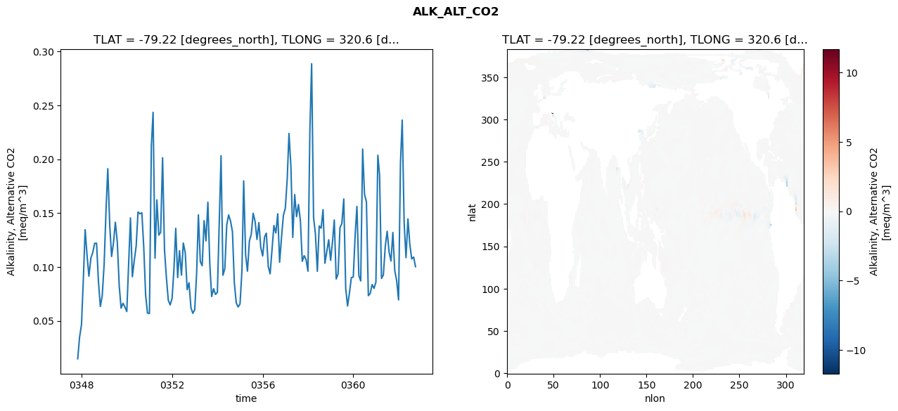
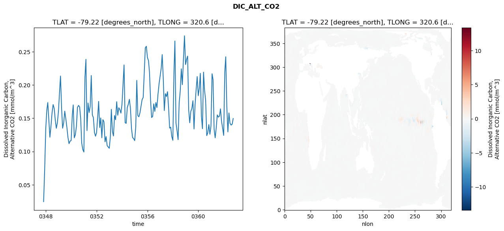
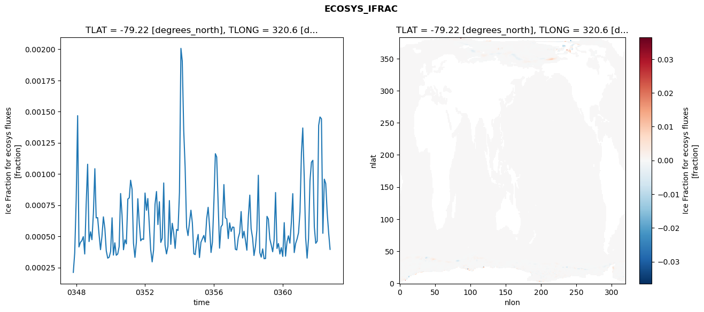
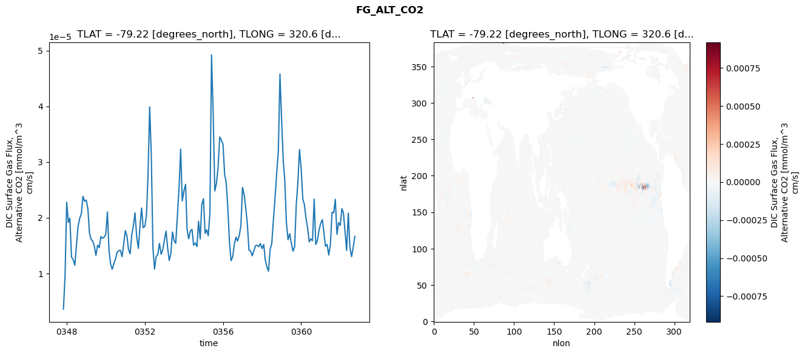

glb-dor_North_Atlantic_basin_001_1999-10-01_00007#
Simulation details#
Case: smyle.cdr-atlas-v0.glb-dor_North_Atlantic_basin_001_1999-10-01_00007.001
Basin: North_Atlantic_basin
Polygon: 1.0
Start date: 1999-10
Show code cell source Hide code cell source
import xarray as xr
import matplotlib.pyplot as plt
Show code cell source Hide code cell source
zarr_store = "/path/to/zarr/store"
# Parameters
zarr_store = "/global/cfs/projectdirs/m4746/Projects/Ocean-CDR-Atlas-v0/data/validation/smyle.cdr-atlas-v0.glb-dor_North_Atlantic_basin_001_1999-10-01_00007.001.validation.zarr"
Show code cell source Hide code cell source
%%time
ds_o = xr.open_zarr(zarr_store).compute()
ds_o
CPU times: user 590 ms, sys: 432 ms, total: 1.02 s
Wall time: 1.15 s
<xarray.Dataset> Size: 2MB
Dimensions: (nlat: 384, nlon: 320, time: 180)
Coordinates:
TLAT float64 8B -79.22
TLONG float64 8B 320.6
ULAT float64 8B -78.95
ULONG float64 8B 321.1
* time (time) object 1kB 0347-11-01 00:00:00 ... 0362-10-01 0...
z_t float32 4B 500.0
Dimensions without coordinates: nlat, nlon
Data variables:
ALK_ALT_CO2_diff (nlat, nlon) float32 492kB nan nan nan ... nan nan nan
ALK_ALT_CO2_rmse (time) float64 1kB 0.01465 0.03474 ... 0.1091 0.1002
DIC_ALT_CO2_diff (nlat, nlon) float32 492kB nan nan nan ... nan nan nan
DIC_ALT_CO2_rmse (time) float64 1kB 0.02449 0.0717 0.1338 ... 0.141 0.1496
ECOSYS_IFRAC_diff (nlat, nlon) float32 492kB nan nan nan ... nan nan nan
ECOSYS_IFRAC_rmse (time) float64 1kB 0.0002108 0.0003666 ... 0.0003954
FG_ALT_CO2_diff (nlat, nlon) float32 492kB nan nan nan ... nan nan nan
FG_ALT_CO2_rmse (time) float64 1kB 3.596e-06 9.507e-06 ... 1.664e-05xarray.Dataset
- nlat: 384
- nlon: 320
- time: 180
- TLAT()float64-79.22
- long_name :
- array of t-grid latitudes
- units :
- degrees_north
array(-79.22052261)
- TLONG()float64320.6
- long_name :
- array of t-grid longitudes
- units :
- degrees_east
array(320.56250892)
- ULAT()float64-78.95
- long_name :
- array of u-grid latitudes
- units :
- degrees_north
array(-78.95289509)
- ULONG()float64321.1
- long_name :
- array of u-grid longitudes
- units :
- degrees_east
array(321.12500894)
- time(time)object0347-11-01 00:00:00 ... 0362-10-...
- bounds :
- time_bound
- long_name :
- time
array([cftime.DatetimeNoLeap(347, 11, 1, 0, 0, 0, 0, has_year_zero=True), cftime.DatetimeNoLeap(347, 12, 1, 0, 0, 0, 0, has_year_zero=True), cftime.DatetimeNoLeap(348, 1, 1, 0, 0, 0, 0, has_year_zero=True), cftime.DatetimeNoLeap(348, 2, 1, 0, 0, 0, 0, has_year_zero=True), cftime.DatetimeNoLeap(348, 3, 1, 0, 0, 0, 0, has_year_zero=True), cftime.DatetimeNoLeap(348, 4, 1, 0, 0, 0, 0, has_year_zero=True), cftime.DatetimeNoLeap(348, 5, 1, 0, 0, 0, 0, has_year_zero=True), cftime.DatetimeNoLeap(348, 6, 1, 0, 0, 0, 0, has_year_zero=True), cftime.DatetimeNoLeap(348, 7, 1, 0, 0, 0, 0, has_year_zero=True), cftime.DatetimeNoLeap(348, 8, 1, 0, 0, 0, 0, has_year_zero=True), cftime.DatetimeNoLeap(348, 9, 1, 0, 0, 0, 0, has_year_zero=True), cftime.DatetimeNoLeap(348, 10, 1, 0, 0, 0, 0, has_year_zero=True), cftime.DatetimeNoLeap(348, 11, 1, 0, 0, 0, 0, has_year_zero=True), cftime.DatetimeNoLeap(348, 12, 1, 0, 0, 0, 0, has_year_zero=True), cftime.DatetimeNoLeap(349, 1, 1, 0, 0, 0, 0, has_year_zero=True), cftime.DatetimeNoLeap(349, 2, 1, 0, 0, 0, 0, has_year_zero=True), cftime.DatetimeNoLeap(349, 3, 1, 0, 0, 0, 0, has_year_zero=True), cftime.DatetimeNoLeap(349, 4, 1, 0, 0, 0, 0, has_year_zero=True), cftime.DatetimeNoLeap(349, 5, 1, 0, 0, 0, 0, has_year_zero=True), cftime.DatetimeNoLeap(349, 6, 1, 0, 0, 0, 0, has_year_zero=True), cftime.DatetimeNoLeap(349, 7, 1, 0, 0, 0, 0, has_year_zero=True), cftime.DatetimeNoLeap(349, 8, 1, 0, 0, 0, 0, has_year_zero=True), cftime.DatetimeNoLeap(349, 9, 1, 0, 0, 0, 0, has_year_zero=True), cftime.DatetimeNoLeap(349, 10, 1, 0, 0, 0, 0, has_year_zero=True), cftime.DatetimeNoLeap(349, 11, 1, 0, 0, 0, 0, has_year_zero=True), cftime.DatetimeNoLeap(349, 12, 1, 0, 0, 0, 0, has_year_zero=True), cftime.DatetimeNoLeap(350, 1, 1, 0, 0, 0, 0, has_year_zero=True), cftime.DatetimeNoLeap(350, 2, 1, 0, 0, 0, 0, has_year_zero=True), cftime.DatetimeNoLeap(350, 3, 1, 0, 0, 0, 0, has_year_zero=True), cftime.DatetimeNoLeap(350, 4, 1, 0, 0, 0, 0, has_year_zero=True), cftime.DatetimeNoLeap(350, 5, 1, 0, 0, 0, 0, has_year_zero=True), cftime.DatetimeNoLeap(350, 6, 1, 0, 0, 0, 0, has_year_zero=True), cftime.DatetimeNoLeap(350, 7, 1, 0, 0, 0, 0, has_year_zero=True), cftime.DatetimeNoLeap(350, 8, 1, 0, 0, 0, 0, has_year_zero=True), cftime.DatetimeNoLeap(350, 9, 1, 0, 0, 0, 0, has_year_zero=True), cftime.DatetimeNoLeap(350, 10, 1, 0, 0, 0, 0, has_year_zero=True), cftime.DatetimeNoLeap(350, 11, 1, 0, 0, 0, 0, has_year_zero=True), cftime.DatetimeNoLeap(350, 12, 1, 0, 0, 0, 0, has_year_zero=True), cftime.DatetimeNoLeap(351, 1, 1, 0, 0, 0, 0, has_year_zero=True), cftime.DatetimeNoLeap(351, 2, 1, 0, 0, 0, 0, has_year_zero=True), cftime.DatetimeNoLeap(351, 3, 1, 0, 0, 0, 0, has_year_zero=True), cftime.DatetimeNoLeap(351, 4, 1, 0, 0, 0, 0, has_year_zero=True), cftime.DatetimeNoLeap(351, 5, 1, 0, 0, 0, 0, has_year_zero=True), cftime.DatetimeNoLeap(351, 6, 1, 0, 0, 0, 0, has_year_zero=True), cftime.DatetimeNoLeap(351, 7, 1, 0, 0, 0, 0, has_year_zero=True), cftime.DatetimeNoLeap(351, 8, 1, 0, 0, 0, 0, has_year_zero=True), cftime.DatetimeNoLeap(351, 9, 1, 0, 0, 0, 0, has_year_zero=True), cftime.DatetimeNoLeap(351, 10, 1, 0, 0, 0, 0, has_year_zero=True), cftime.DatetimeNoLeap(351, 11, 1, 0, 0, 0, 0, has_year_zero=True), cftime.DatetimeNoLeap(351, 12, 1, 0, 0, 0, 0, has_year_zero=True), cftime.DatetimeNoLeap(352, 1, 1, 0, 0, 0, 0, has_year_zero=True), cftime.DatetimeNoLeap(352, 2, 1, 0, 0, 0, 0, has_year_zero=True), cftime.DatetimeNoLeap(352, 3, 1, 0, 0, 0, 0, has_year_zero=True), cftime.DatetimeNoLeap(352, 4, 1, 0, 0, 0, 0, has_year_zero=True), cftime.DatetimeNoLeap(352, 5, 1, 0, 0, 0, 0, has_year_zero=True), cftime.DatetimeNoLeap(352, 6, 1, 0, 0, 0, 0, has_year_zero=True), cftime.DatetimeNoLeap(352, 7, 1, 0, 0, 0, 0, has_year_zero=True), cftime.DatetimeNoLeap(352, 8, 1, 0, 0, 0, 0, has_year_zero=True), cftime.DatetimeNoLeap(352, 9, 1, 0, 0, 0, 0, has_year_zero=True), cftime.DatetimeNoLeap(352, 10, 1, 0, 0, 0, 0, has_year_zero=True), cftime.DatetimeNoLeap(352, 11, 1, 0, 0, 0, 0, has_year_zero=True), cftime.DatetimeNoLeap(352, 12, 1, 0, 0, 0, 0, has_year_zero=True), cftime.DatetimeNoLeap(353, 1, 1, 0, 0, 0, 0, has_year_zero=True), cftime.DatetimeNoLeap(353, 2, 1, 0, 0, 0, 0, has_year_zero=True), cftime.DatetimeNoLeap(353, 3, 1, 0, 0, 0, 0, has_year_zero=True), cftime.DatetimeNoLeap(353, 4, 1, 0, 0, 0, 0, has_year_zero=True), cftime.DatetimeNoLeap(353, 5, 1, 0, 0, 0, 0, has_year_zero=True), cftime.DatetimeNoLeap(353, 6, 1, 0, 0, 0, 0, has_year_zero=True), cftime.DatetimeNoLeap(353, 7, 1, 0, 0, 0, 0, has_year_zero=True), cftime.DatetimeNoLeap(353, 8, 1, 0, 0, 0, 0, has_year_zero=True), cftime.DatetimeNoLeap(353, 9, 1, 0, 0, 0, 0, has_year_zero=True), cftime.DatetimeNoLeap(353, 10, 1, 0, 0, 0, 0, has_year_zero=True), cftime.DatetimeNoLeap(353, 11, 1, 0, 0, 0, 0, has_year_zero=True), cftime.DatetimeNoLeap(353, 12, 1, 0, 0, 0, 0, has_year_zero=True), cftime.DatetimeNoLeap(354, 1, 1, 0, 0, 0, 0, has_year_zero=True), cftime.DatetimeNoLeap(354, 2, 1, 0, 0, 0, 0, has_year_zero=True), cftime.DatetimeNoLeap(354, 3, 1, 0, 0, 0, 0, has_year_zero=True), cftime.DatetimeNoLeap(354, 4, 1, 0, 0, 0, 0, has_year_zero=True), cftime.DatetimeNoLeap(354, 5, 1, 0, 0, 0, 0, has_year_zero=True), cftime.DatetimeNoLeap(354, 6, 1, 0, 0, 0, 0, has_year_zero=True), cftime.DatetimeNoLeap(354, 7, 1, 0, 0, 0, 0, has_year_zero=True), cftime.DatetimeNoLeap(354, 8, 1, 0, 0, 0, 0, has_year_zero=True), cftime.DatetimeNoLeap(354, 9, 1, 0, 0, 0, 0, has_year_zero=True), cftime.DatetimeNoLeap(354, 10, 1, 0, 0, 0, 0, has_year_zero=True), cftime.DatetimeNoLeap(354, 11, 1, 0, 0, 0, 0, has_year_zero=True), cftime.DatetimeNoLeap(354, 12, 1, 0, 0, 0, 0, has_year_zero=True), cftime.DatetimeNoLeap(355, 1, 1, 0, 0, 0, 0, has_year_zero=True), cftime.DatetimeNoLeap(355, 2, 1, 0, 0, 0, 0, has_year_zero=True), cftime.DatetimeNoLeap(355, 3, 1, 0, 0, 0, 0, has_year_zero=True), cftime.DatetimeNoLeap(355, 4, 1, 0, 0, 0, 0, has_year_zero=True), cftime.DatetimeNoLeap(355, 5, 1, 0, 0, 0, 0, has_year_zero=True), cftime.DatetimeNoLeap(355, 6, 1, 0, 0, 0, 0, has_year_zero=True), cftime.DatetimeNoLeap(355, 7, 1, 0, 0, 0, 0, has_year_zero=True), cftime.DatetimeNoLeap(355, 8, 1, 0, 0, 0, 0, has_year_zero=True), cftime.DatetimeNoLeap(355, 9, 1, 0, 0, 0, 0, has_year_zero=True), cftime.DatetimeNoLeap(355, 10, 1, 0, 0, 0, 0, has_year_zero=True), cftime.DatetimeNoLeap(355, 11, 1, 0, 0, 0, 0, has_year_zero=True), cftime.DatetimeNoLeap(355, 12, 1, 0, 0, 0, 0, has_year_zero=True), cftime.DatetimeNoLeap(356, 1, 1, 0, 0, 0, 0, has_year_zero=True), cftime.DatetimeNoLeap(356, 2, 1, 0, 0, 0, 0, has_year_zero=True), cftime.DatetimeNoLeap(356, 3, 1, 0, 0, 0, 0, has_year_zero=True), cftime.DatetimeNoLeap(356, 4, 1, 0, 0, 0, 0, has_year_zero=True), cftime.DatetimeNoLeap(356, 5, 1, 0, 0, 0, 0, has_year_zero=True), cftime.DatetimeNoLeap(356, 6, 1, 0, 0, 0, 0, has_year_zero=True), cftime.DatetimeNoLeap(356, 7, 1, 0, 0, 0, 0, has_year_zero=True), cftime.DatetimeNoLeap(356, 8, 1, 0, 0, 0, 0, has_year_zero=True), cftime.DatetimeNoLeap(356, 9, 1, 0, 0, 0, 0, has_year_zero=True), cftime.DatetimeNoLeap(356, 10, 1, 0, 0, 0, 0, has_year_zero=True), cftime.DatetimeNoLeap(356, 11, 1, 0, 0, 0, 0, has_year_zero=True), cftime.DatetimeNoLeap(356, 12, 1, 0, 0, 0, 0, has_year_zero=True), cftime.DatetimeNoLeap(357, 1, 1, 0, 0, 0, 0, has_year_zero=True), cftime.DatetimeNoLeap(357, 2, 1, 0, 0, 0, 0, has_year_zero=True), cftime.DatetimeNoLeap(357, 3, 1, 0, 0, 0, 0, has_year_zero=True), cftime.DatetimeNoLeap(357, 4, 1, 0, 0, 0, 0, has_year_zero=True), cftime.DatetimeNoLeap(357, 5, 1, 0, 0, 0, 0, has_year_zero=True), cftime.DatetimeNoLeap(357, 6, 1, 0, 0, 0, 0, has_year_zero=True), cftime.DatetimeNoLeap(357, 7, 1, 0, 0, 0, 0, has_year_zero=True), cftime.DatetimeNoLeap(357, 8, 1, 0, 0, 0, 0, has_year_zero=True), cftime.DatetimeNoLeap(357, 9, 1, 0, 0, 0, 0, has_year_zero=True), cftime.DatetimeNoLeap(357, 10, 1, 0, 0, 0, 0, has_year_zero=True), cftime.DatetimeNoLeap(357, 11, 1, 0, 0, 0, 0, has_year_zero=True), cftime.DatetimeNoLeap(357, 12, 1, 0, 0, 0, 0, has_year_zero=True), cftime.DatetimeNoLeap(358, 1, 1, 0, 0, 0, 0, has_year_zero=True), cftime.DatetimeNoLeap(358, 2, 1, 0, 0, 0, 0, has_year_zero=True), cftime.DatetimeNoLeap(358, 3, 1, 0, 0, 0, 0, has_year_zero=True), cftime.DatetimeNoLeap(358, 4, 1, 0, 0, 0, 0, has_year_zero=True), cftime.DatetimeNoLeap(358, 5, 1, 0, 0, 0, 0, has_year_zero=True), cftime.DatetimeNoLeap(358, 6, 1, 0, 0, 0, 0, has_year_zero=True), cftime.DatetimeNoLeap(358, 7, 1, 0, 0, 0, 0, has_year_zero=True), cftime.DatetimeNoLeap(358, 8, 1, 0, 0, 0, 0, has_year_zero=True), cftime.DatetimeNoLeap(358, 9, 1, 0, 0, 0, 0, has_year_zero=True), cftime.DatetimeNoLeap(358, 10, 1, 0, 0, 0, 0, has_year_zero=True), cftime.DatetimeNoLeap(358, 11, 1, 0, 0, 0, 0, has_year_zero=True), cftime.DatetimeNoLeap(358, 12, 1, 0, 0, 0, 0, has_year_zero=True), cftime.DatetimeNoLeap(359, 1, 1, 0, 0, 0, 0, has_year_zero=True), cftime.DatetimeNoLeap(359, 2, 1, 0, 0, 0, 0, has_year_zero=True), cftime.DatetimeNoLeap(359, 3, 1, 0, 0, 0, 0, has_year_zero=True), cftime.DatetimeNoLeap(359, 4, 1, 0, 0, 0, 0, has_year_zero=True), cftime.DatetimeNoLeap(359, 5, 1, 0, 0, 0, 0, has_year_zero=True), cftime.DatetimeNoLeap(359, 6, 1, 0, 0, 0, 0, has_year_zero=True), cftime.DatetimeNoLeap(359, 7, 1, 0, 0, 0, 0, has_year_zero=True), cftime.DatetimeNoLeap(359, 8, 1, 0, 0, 0, 0, has_year_zero=True), cftime.DatetimeNoLeap(359, 9, 1, 0, 0, 0, 0, has_year_zero=True), cftime.DatetimeNoLeap(359, 10, 1, 0, 0, 0, 0, has_year_zero=True), cftime.DatetimeNoLeap(359, 11, 1, 0, 0, 0, 0, has_year_zero=True), cftime.DatetimeNoLeap(359, 12, 1, 0, 0, 0, 0, has_year_zero=True), cftime.DatetimeNoLeap(360, 1, 1, 0, 0, 0, 0, has_year_zero=True), cftime.DatetimeNoLeap(360, 2, 1, 0, 0, 0, 0, has_year_zero=True), cftime.DatetimeNoLeap(360, 3, 1, 0, 0, 0, 0, has_year_zero=True), cftime.DatetimeNoLeap(360, 4, 1, 0, 0, 0, 0, has_year_zero=True), cftime.DatetimeNoLeap(360, 5, 1, 0, 0, 0, 0, has_year_zero=True), cftime.DatetimeNoLeap(360, 6, 1, 0, 0, 0, 0, has_year_zero=True), cftime.DatetimeNoLeap(360, 7, 1, 0, 0, 0, 0, has_year_zero=True), cftime.DatetimeNoLeap(360, 8, 1, 0, 0, 0, 0, has_year_zero=True), cftime.DatetimeNoLeap(360, 9, 1, 0, 0, 0, 0, has_year_zero=True), cftime.DatetimeNoLeap(360, 10, 1, 0, 0, 0, 0, has_year_zero=True), cftime.DatetimeNoLeap(360, 11, 1, 0, 0, 0, 0, has_year_zero=True), cftime.DatetimeNoLeap(360, 12, 1, 0, 0, 0, 0, has_year_zero=True), cftime.DatetimeNoLeap(361, 1, 1, 0, 0, 0, 0, has_year_zero=True), cftime.DatetimeNoLeap(361, 2, 1, 0, 0, 0, 0, has_year_zero=True), cftime.DatetimeNoLeap(361, 3, 1, 0, 0, 0, 0, has_year_zero=True), cftime.DatetimeNoLeap(361, 4, 1, 0, 0, 0, 0, has_year_zero=True), cftime.DatetimeNoLeap(361, 5, 1, 0, 0, 0, 0, has_year_zero=True), cftime.DatetimeNoLeap(361, 6, 1, 0, 0, 0, 0, has_year_zero=True), cftime.DatetimeNoLeap(361, 7, 1, 0, 0, 0, 0, has_year_zero=True), cftime.DatetimeNoLeap(361, 8, 1, 0, 0, 0, 0, has_year_zero=True), cftime.DatetimeNoLeap(361, 9, 1, 0, 0, 0, 0, has_year_zero=True), cftime.DatetimeNoLeap(361, 10, 1, 0, 0, 0, 0, has_year_zero=True), cftime.DatetimeNoLeap(361, 11, 1, 0, 0, 0, 0, has_year_zero=True), cftime.DatetimeNoLeap(361, 12, 1, 0, 0, 0, 0, has_year_zero=True), cftime.DatetimeNoLeap(362, 1, 1, 0, 0, 0, 0, has_year_zero=True), cftime.DatetimeNoLeap(362, 2, 1, 0, 0, 0, 0, has_year_zero=True), cftime.DatetimeNoLeap(362, 3, 1, 0, 0, 0, 0, has_year_zero=True), cftime.DatetimeNoLeap(362, 4, 1, 0, 0, 0, 0, has_year_zero=True), cftime.DatetimeNoLeap(362, 5, 1, 0, 0, 0, 0, has_year_zero=True), cftime.DatetimeNoLeap(362, 6, 1, 0, 0, 0, 0, has_year_zero=True), cftime.DatetimeNoLeap(362, 7, 1, 0, 0, 0, 0, has_year_zero=True), cftime.DatetimeNoLeap(362, 8, 1, 0, 0, 0, 0, has_year_zero=True), cftime.DatetimeNoLeap(362, 9, 1, 0, 0, 0, 0, has_year_zero=True), cftime.DatetimeNoLeap(362, 10, 1, 0, 0, 0, 0, has_year_zero=True)], dtype=object) - z_t()float32500.0
- long_name :
- depth from surface to midpoint of layer
- positive :
- down
- units :
- centimeters
- valid_max :
- 537500.0
- valid_min :
- 500.0
array(500., dtype=float32)
- ALK_ALT_CO2_diff(nlat, nlon)float32nan nan nan nan ... nan nan nan nan
- cell_methods :
- time: mean
- grid_loc :
- 3111
- long_name :
- Alkalinity, Alternative CO2
- units :
- meq/m^3
array([[ nan, nan, nan, ..., nan, nan, nan], [ nan, nan, nan, ..., nan, nan, nan], [ 0.00878906, -0.00366211, 0.00073242, ..., nan, nan, nan], ..., [ nan, nan, nan, ..., nan, nan, nan], [ nan, nan, nan, ..., nan, nan, nan], [ nan, nan, nan, ..., nan, nan, nan]], dtype=float32) - ALK_ALT_CO2_rmse(time)float640.01465 0.03474 ... 0.1091 0.1002
- cell_methods :
- time: mean
- grid_loc :
- 3111
- long_name :
- Alkalinity, Alternative CO2
- units :
- meq/m^3
array([0.01464517, 0.03474186, 0.04634637, 0.09006953, 0.13460729, 0.11041889, 0.09138783, 0.1082322 , 0.11327535, 0.12191437, 0.12203798, 0.0866496 , 0.06330927, 0.07304928, 0.10239627, 0.15344437, 0.19120967, 0.1389665 , 0.10970485, 0.12256348, 0.14151174, 0.12321522, 0.0826829 , 0.06166046, 0.06628003, 0.06288279, 0.05853422, 0.10460089, 0.14550446, 0.09089415, 0.10571645, 0.1191192 , 0.15104451, 0.1493526 , 0.15028426, 0.11894917, 0.07358942, 0.05707129, 0.05678948, 0.21240083, 0.24356135, 0.10810967, 0.16223652, 0.12949989, 0.13215206, 0.20139203, 0.11576321, 0.09035997, 0.06904825, 0.06471203, 0.0707411 , 0.09879687, 0.13584853, 0.09012873, 0.11498239, 0.09238028, 0.12220421, 0.11325075, 0.07887483, 0.08532713, 0.06206798, 0.05692177, 0.06030591, 0.09473579, 0.14832716, 0.10489911, 0.10113886, 0.14288221, 0.12415835, 0.16010746, 0.10242241, 0.07251204, 0.07977908, 0.07450655, 0.07632731, 0.14230454, 0.20324658, 0.09226525, 0.09848525, 0.13893758, 0.1482713 , 0.14265434, 0.13267895, 0.08563826, 0.06660751, 0.06282906, 0.06559764, 0.0966592 , 0.17990537, 0.11126597, 0.09605469, 0.12418616, 0.13023257, 0.14980782, 0.14220343, 0.12552494, 0.14111161, 0.11809917, 0.11017628, 0.12803936, 0.13133076, 0.10049771, 0.09357989, 0.11671854, 0.13844598, 0.13150678, 0.14939908, 0.10440749, 0.12772922, 0.14797714, 0.15445009, 0.18225655, 0.22396514, 0.19318979, 0.12740277, 0.16720505, 0.14672012, 0.1579108 , 0.14291699, 0.10519521, 0.11042486, 0.10702018, 0.0960248 , 0.22706961, 0.28871151, 0.14606787, 0.13073142, 0.09590686, 0.13801117, 0.13601895, 0.15317942, 0.10343332, 0.11443873, 0.1252113 , 0.10613818, 0.12386107, 0.14351766, 0.08879582, 0.0934838 , 0.13644349, 0.14032232, 0.16308682, 0.08010289, 0.0637172 , 0.07603593, 0.08998566, 0.09060228, 0.13023229, 0.15617075, 0.09198114, 0.08694411, 0.20946572, 0.1675612 , 0.16045179, 0.07329856, 0.07537218, 0.08362045, 0.08004974, 0.08584677, 0.20371891, 0.18539753, 0.08933509, 0.09255095, 0.1191414 , 0.133105 , 0.11384688, 0.10546654, 0.13198033, 0.09651791, 0.08737141, 0.06942378, 0.19708535, 0.23640749, 0.14079424, 0.10863004, 0.14459409, 0.12118579, 0.10739867, 0.10913639, 0.10022631]) - DIC_ALT_CO2_diff(nlat, nlon)float32nan nan nan nan ... nan nan nan nan
- cell_methods :
- time: mean
- grid_loc :
- 3111
- long_name :
- Dissolved Inorganic Carbon, Alternative CO2
- units :
- mmol/m^3
array([[ nan, nan, nan, ..., nan, nan, nan], [ nan, nan, nan, ..., nan, nan, nan], [0.01171875, 0.00048828, 0.00415039, ..., nan, nan, nan], ..., [ nan, nan, nan, ..., nan, nan, nan], [ nan, nan, nan, ..., nan, nan, nan], [ nan, nan, nan, ..., nan, nan, nan]], dtype=float32) - DIC_ALT_CO2_rmse(time)float640.02449 0.0717 ... 0.141 0.1496
- cell_methods :
- time: mean
- grid_loc :
- 3111
- long_name :
- Dissolved Inorganic Carbon, Alternative CO2
- units :
- mmol/m^3
array([0.02448824, 0.07170331, 0.13380971, 0.16237683, 0.17355811, 0.14639536, 0.12145354, 0.13867601, 0.15780341, 0.17062953, 0.16471954, 0.1477818 , 0.13490218, 0.14322187, 0.16007575, 0.18916096, 0.21356445, 0.16493897, 0.13499687, 0.14347367, 0.16070958, 0.14912178, 0.13618243, 0.12121835, 0.11177269, 0.11557133, 0.11660449, 0.15338691, 0.17006168, 0.12063795, 0.12506073, 0.13786261, 0.1661836 , 0.16925782, 0.16706952, 0.14993766, 0.11226269, 0.10297431, 0.09918658, 0.21177225, 0.2386271 , 0.13142995, 0.17285739, 0.15863428, 0.1676374 , 0.21429194, 0.15493809, 0.15108695, 0.12874355, 0.1230034 , 0.12837061, 0.15138778, 0.17536485, 0.1360455 , 0.15044944, 0.12065248, 0.14781564, 0.14468994, 0.11446993, 0.12234278, 0.10882667, 0.10676053, 0.10479024, 0.12253932, 0.16338106, 0.12983595, 0.12332825, 0.15408439, 0.14779242, 0.17488591, 0.15451577, 0.1658292 , 0.16288994, 0.15767431, 0.1712505 , 0.20255028, 0.23023475, 0.14321698, 0.142351 , 0.16598214, 0.17107425, 0.17840363, 0.16460027, 0.13426656, 0.12099786, 0.11937649, 0.1163546 , 0.13819351, 0.20696682, 0.15390925, 0.15223953, 0.15839891, 0.16788691, 0.17793023, 0.1812437 , 0.21719865, 0.25598432, 0.25824028, 0.24152604, 0.23648385, 0.21922853, 0.17764858, 0.15111288, 0.15272889, 0.17165542, 0.16033945, 0.17364724, 0.1661671 , 0.18646324, 0.20174597, 0.2137719 , 0.22542167, 0.24571764, 0.20968687, 0.16158057, 0.18701612, 0.18263088, 0.18994958, 0.16537701, 0.13516264, 0.1365478 , 0.12243299, 0.11684369, 0.2173456 , 0.2661569 , 0.14299067, 0.13123392, 0.11780853, 0.17262581, 0.19083889, 0.2243314 , 0.20052922, 0.2389366 , 0.27399382, 0.23081246, 0.23874558, 0.24347812, 0.16272253, 0.14313195, 0.16035705, 0.164753 , 0.17635239, 0.13381367, 0.17015259, 0.19353105, 0.21265338, 0.18391668, 0.19566193, 0.21758306, 0.15362185, 0.13423967, 0.21936094, 0.19188288, 0.17671714, 0.12382395, 0.12818078, 0.14047606, 0.12596264, 0.13843056, 0.21691702, 0.20819629, 0.13370734, 0.12052781, 0.13570604, 0.15499001, 0.15164868, 0.1532634 , 0.16415419, 0.14513034, 0.13508267, 0.1241309 , 0.21963662, 0.24244916, 0.16672237, 0.12947472, 0.15797963, 0.14262505, 0.13972658, 0.14101781, 0.14955883]) - ECOSYS_IFRAC_diff(nlat, nlon)float32nan nan nan nan ... nan nan nan nan
- cell_methods :
- time: mean
- grid_loc :
- 2110
- long_name :
- Ice Fraction for ecosys fluxes
- units :
- fraction
array([[ nan, nan, nan, ..., nan, nan, nan], [ nan, nan, nan, ..., nan, nan, nan], [-5.9604645e-07, 7.7486038e-07, 1.1861324e-05, ..., nan, nan, nan], ..., [ nan, nan, nan, ..., nan, nan, nan], [ nan, nan, nan, ..., nan, nan, nan], [ nan, nan, nan, ..., nan, nan, nan]], dtype=float32) - ECOSYS_IFRAC_rmse(time)float640.0002108 0.0003666 ... 0.0003954
- cell_methods :
- time: mean
- grid_loc :
- 2110
- long_name :
- Ice Fraction for ecosys fluxes
- units :
- fraction
array([0.00021081, 0.00036656, 0.00078961, 0.00146714, 0.00041505, 0.00045184, 0.00046509, 0.00049726, 0.00035827, 0.00075603, 0.00107783, 0.00045793, 0.00053613, 0.000473 , 0.00068187, 0.00104209, 0.00064769, 0.00065 , 0.00051508, 0.00039297, 0.0004978 , 0.00065597, 0.00056229, 0.00038432, 0.000325 , 0.00033233, 0.00037821, 0.00064834, 0.00034939, 0.000448 , 0.00034803, 0.00035858, 0.00041764, 0.00084313, 0.00066645, 0.00039241, 0.00047208, 0.00043964, 0.0007988 , 0.00080838, 0.00094944, 0.00087747, 0.00044383, 0.00033135, 0.00045164, 0.00080141, 0.00060506, 0.00046389, 0.00047945, 0.00047521, 0.00084703, 0.00070882, 0.00080298, 0.0005953 , 0.00039224, 0.00029509, 0.00038941, 0.00075757, 0.00085916, 0.00059417, 0.00077731, 0.00045109, 0.00048431, 0.00092767, 0.00043097, 0.00035895, 0.00041957, 0.00078658, 0.00043562, 0.00060425, 0.00052567, 0.00040281, 0.00055537, 0.00054674, 0.00085437, 0.00200662, 0.0019055 , 0.00134975, 0.00105291, 0.00057282, 0.00050586, 0.00060999, 0.0007093 , 0.00060796, 0.00035982, 0.00035342, 0.00045727, 0.00051485, 0.00033011, 0.0004523 , 0.0004794 , 0.00050691, 0.00045413, 0.000642 , 0.00073251, 0.00057955, 0.00037049, 0.00045374, 0.00077907, 0.00116234, 0.00113609, 0.0007578 , 0.00040509, 0.00057652, 0.0005929 , 0.00091478, 0.00064837, 0.00063911, 0.00048176, 0.00060747, 0.0005388 , 0.0005747 , 0.00057211, 0.00039652, 0.00039076, 0.00048756, 0.00052966, 0.00069852, 0.00048628, 0.00054069, 0.00046803, 0.00038876, 0.00065468, 0.00083029, 0.0005614 , 0.00048687, 0.00034619, 0.00041957, 0.00054979, 0.00098967, 0.00036934, 0.00033305, 0.00039905, 0.00032055, 0.00032207, 0.00065999, 0.00063849, 0.0004801 , 0.00043121, 0.00037633, 0.00046725, 0.00085109, 0.00040237, 0.00044218, 0.00035815, 0.0004092 , 0.0003389 , 0.00060959, 0.00034089, 0.00045559, 0.000504 , 0.00044555, 0.00060511, 0.00084214, 0.00036966, 0.00044295, 0.00047965, 0.00052844, 0.00069597, 0.00117159, 0.00136859, 0.00097135, 0.00049081, 0.00032519, 0.00047952, 0.00094606, 0.0010942 , 0.00110936, 0.00057517, 0.00044396, 0.00046108, 0.00138901, 0.00145664, 0.00144171, 0.00052417, 0.00095793, 0.00092273, 0.00068723, 0.00052628, 0.00039542]) - FG_ALT_CO2_diff(nlat, nlon)float32nan nan nan nan ... nan nan nan nan
- cell_methods :
- time: mean
- grid_loc :
- 2110
- long_name :
- DIC Surface Gas Flux, Alternative CO2
- units :
- mmol/m^3 cm/s
array([[ nan, nan, nan, ..., nan, nan, nan], [ nan, nan, nan, ..., nan, nan, nan], [-3.2422349e-09, -6.9828445e-09, -5.7104987e-09, ..., nan, nan, nan], ..., [ nan, nan, nan, ..., nan, nan, nan], [ nan, nan, nan, ..., nan, nan, nan], [ nan, nan, nan, ..., nan, nan, nan]], dtype=float32) - FG_ALT_CO2_rmse(time)float643.596e-06 9.507e-06 ... 1.664e-05
- cell_methods :
- time: mean
- grid_loc :
- 2110
- long_name :
- DIC Surface Gas Flux, Alternative CO2
- units :
- mmol/m^3 cm/s
array([3.59599375e-06, 9.50723780e-06, 2.27755615e-05, 1.91531748e-05, 1.99069262e-05, 1.29055023e-05, 1.24966731e-05, 1.14702438e-05, 1.48636486e-05, 1.84462302e-05, 1.98768689e-05, 2.06853466e-05, 2.38380000e-05, 2.29403804e-05, 2.31601498e-05, 2.15823808e-05, 1.73341155e-05, 1.60990674e-05, 1.57978304e-05, 1.48965330e-05, 1.32242686e-05, 1.50634344e-05, 1.46239194e-05, 1.66079040e-05, 1.62885647e-05, 1.64951357e-05, 1.70409135e-05, 2.10207323e-05, 1.42798962e-05, 1.16829712e-05, 1.07317209e-05, 1.17112009e-05, 1.25582563e-05, 1.37618254e-05, 1.40693882e-05, 1.41434955e-05, 1.29982006e-05, 1.52312904e-05, 1.76785448e-05, 1.67038357e-05, 1.43247094e-05, 1.35069924e-05, 1.69028472e-05, 1.85578482e-05, 2.08647150e-05, 1.66361989e-05, 1.44881017e-05, 1.83327575e-05, 2.17352767e-05, 1.82017372e-05, 1.84278696e-05, 2.05716361e-05, 2.76208376e-05, 3.98807696e-05, 3.14093875e-05, 1.45475296e-05, 1.07647424e-05, 1.30213973e-05, 1.34095097e-05, 1.53778816e-05, 1.34265758e-05, 1.42183953e-05, 1.60017743e-05, 1.75813638e-05, 1.47465585e-05, 1.23149802e-05, 1.34753142e-05, 1.74285612e-05, 1.58777517e-05, 1.53986258e-05, 2.04742976e-05, 2.51958759e-05, 3.23022195e-05, 2.30026970e-05, 2.48025839e-05, 2.59815957e-05, 1.79124453e-05, 1.62089713e-05, 1.76094984e-05, 1.78934259e-05, ... 2.64082035e-05, 2.17796572e-05, 1.56513282e-05, 1.22760272e-05, 1.29809837e-05, 1.52311860e-05, 1.65044220e-05, 1.57931449e-05, 1.68093929e-05, 1.85513091e-05, 2.54364925e-05, 2.40992403e-05, 2.18222617e-05, 1.88920168e-05, 1.41591980e-05, 1.40110938e-05, 1.31565722e-05, 1.40429252e-05, 1.49600248e-05, 1.50536931e-05, 1.47832691e-05, 1.53498171e-05, 1.44547597e-05, 1.51823811e-05, 1.24775839e-05, 1.11580824e-05, 1.03916429e-05, 1.43451316e-05, 1.53347735e-05, 1.96734042e-05, 2.36471226e-05, 2.80262563e-05, 3.20287455e-05, 4.57877487e-05, 3.74220333e-05, 3.01589007e-05, 2.66905871e-05, 1.90720062e-05, 1.60287096e-05, 1.71419629e-05, 1.54741074e-05, 1.39861380e-05, 1.47452312e-05, 2.22367177e-05, 2.63297252e-05, 3.22351143e-05, 2.88254175e-05, 2.33010036e-05, 2.24245997e-05, 1.99685926e-05, 1.82034028e-05, 1.56706132e-05, 1.61787821e-05, 1.58641128e-05, 2.33150239e-05, 1.52000225e-05, 1.59101350e-05, 1.77561419e-05, 1.89801770e-05, 1.96381338e-05, 1.73314656e-05, 1.48614974e-05, 1.51989139e-05, 1.32865823e-05, 1.51502360e-05, 2.09710734e-05, 2.08580181e-05, 2.32927592e-05, 1.70008068e-05, 1.91050635e-05, 1.86093212e-05, 2.16255686e-05, 2.09217156e-05, 1.74991543e-05, 1.41098126e-05, 2.08258972e-05, 1.45969383e-05, 1.30220259e-05, 1.47122297e-05, 1.66366828e-05])
- timePandasIndex
PandasIndex(CFTimeIndex([0347-11-01 00:00:00, 0347-12-01 00:00:00, 0348-01-01 00:00:00, 0348-02-01 00:00:00, 0348-03-01 00:00:00, 0348-04-01 00:00:00, 0348-05-01 00:00:00, 0348-06-01 00:00:00, 0348-07-01 00:00:00, 0348-08-01 00:00:00, ... 0362-01-01 00:00:00, 0362-02-01 00:00:00, 0362-03-01 00:00:00, 0362-04-01 00:00:00, 0362-05-01 00:00:00, 0362-06-01 00:00:00, 0362-07-01 00:00:00, 0362-08-01 00:00:00, 0362-09-01 00:00:00, 0362-10-01 00:00:00], dtype='object', length=180, calendar='noleap', freq='MS'))
Show code cell source Hide code cell source
variables = [v[:-5] for v in ds_o.variables if "_rmse" in v]
Show code cell source Hide code cell source
plt.rcParams.update({'figure.max_open_warning': 0})
for v in variables:
fig, axs = plt.subplots(1, 2, figsize=(15, 6))
ds_o[f"{v}_rmse"].plot(ax=axs[0])
ds_o[f"{v}_diff"].plot(ax=axs[1])
plt.suptitle(v, fontweight="bold")



